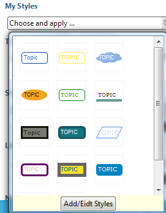
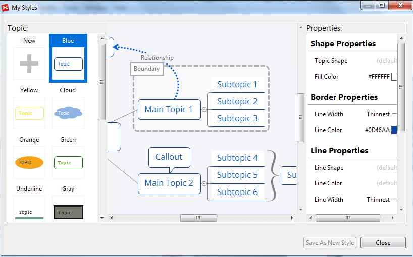

Style and Style Editor
Style is the attribute collection of the map object, which can be extracted, saved and reused. We can apply and create the style of topic, boundary, relationship, and map. Working with the style editor, we can also design the style and preview it at the same time.
To Apply Style:- Select the object(s).
- Open Properties View.
- Click one exisitng style to apply.

Note:
- The selected object can be a topic, boundary, relationship, or map.
- Each object can only have one style applied to it at a time
- You can select multiple objects and apply the same style to all of them.
Extract the style and redesign it with style editor
- Select a target object (topic, relationship, boundary or sheet) in your XMind.
- Choose "Tools -- Extract style" from menu.
- Design the style at the pop up interface
- Topic: shape properties, border properties,line properties and text properties
- Relationship: shape properties, line properties and text properties
- Boundary: shape properties, line properties and text properties
- Sheet: background color, tapered lines, multi-branch colors, gradient color, wallpaper and opacity
- Click 'Save As New Style'.


Redesign the existing styles- Open the properties view
- Click "Choose and apply...-Add/Edit Style" under the "Saved Style" section
- Modify the properties settings on the style edior dialog, and click "save" button